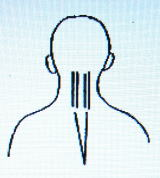

浄霊の原理 ７ （治療時代）
明主様御講話 「治療の根本原理」 （昭和15年4月2日）
「この治療の原理を理解するには、森羅万象の活動とか生成化育・・・
そういうことから出発してゆかなくてはならぬ。
その根本は霊や霊界のことを認識しなくては分からぬ。
ただ目に見えぬので始末が悪いが、説けばそうなくてはならぬことが分かるわけである。
いっさい三元素の根本は霊界で、いっさいのものは霊がある。
生物・・・人間とか動物とか、生きたものの霊は精霊という。
無生機物は単に霊という。
あらゆる生物は、霊界において最初に発生する。
例えば、人は自己の行かんとする所へ先に霊が行く、ただし全部はゆかぬ、全部行けば死ぬ。
霊はいくつにでも分かれるものである。
神様はほうぼうへ祭ってあるが、これは御分霊を祭ったもの。
いま、家を建てんとするに、その人の意志通り霊界に建築してしまう。
独伊と英仏と睨（にら）み合ってるが、これも霊界ではすでに戦っている。
日本とロシアも霊界では戦っている。
故に、あらゆるものは霊界が元なり、霊界の性質は火の性質、熱の世界、
この中心は太陽、太陽の精（性）、霊または霊気、あるいは精気。水が主でその中心は月球。
森羅万象また土より生まる、死ねば土になる・・・土の世界。
霊界の火を火素、空気の水を水素と便称（べんしょう）す。
人間はなんのため生まれさせられているか、私の信念として、
地球上の支配者すなわち神がある目的のために人間を使って仕事（というと安っぽくなるが）・・・
否、経綸すると解する。もいっそう徹底していえば、神の目的はなにか・・・
理想世界（完全なる世界）を造ること、字に表わせば真善美の世界を作るため、
人間を生ませ働かせると解釈できる。
どうしてそういう解釈するかといえば、歴史を顧みればそういうふうになっている。
例えばわれわれが知る限りの原始時代と今日を比ぶれば、その時代は人と人とが殺し合い、奪い合っていたのが、今日は法律によってそれができなくなった。
あるいは木の皮や動物の皮を着たのが、いまは色や光沢のついたその時代より想像もつかぬ美しい織物を着ている。
家屋でも丸太で犬小屋のようなもの、否それより穴居時代は土に穴を掘って住んでいた。
よく地方へ行くと遺跡があるが、もぐらかおけらのような生活をしたものであるが、
これがいまは立派な家屋に住むようになった。
これがもっと進むと社会はもっと道徳が進み、着るものも住居も立派になり、あらゆる組織が発達してくると、
どうしても戦争もできなくなる。戦争などはまだ原始時代の遺物と思う。
人間が殺し合うのも動物的のやり方で、これも今日まではやむを得ぬ。
そうしなければ理想世界はできなかった。
人間はなんのために生まれたか、神の大目的のため働く分子として生まれたに違いない。
故に、神の大目的として働くのが本来の使命であり、人間の生命とは、命は命令の命の字であり、
人間のイノチはなにかに命ぜられている意味を表わしたものと思う。
死とは命令の解除である。
例えば着物は人間が着る目的で着たものゆえ、人間が着てやればそれで着物の使命は達しているわけである。
ところがそういうふうにできた人間はなぜ病気をするか。
ちょうど着物が汚れれば洗濯しなければならぬ。
そのクリーニングが病気である。
故に病気がなくては生きていられぬ。
生きてる間には、ちょうど着物が汚れたり、家が汚れたり、
庭の木の葉が繁って高く眺望を妨げるようになったような理屈になる。
その汚れが溜まったままになるから、その大掃除をするという作用が自然に起る。
その作用が病気である。
熱・・・火で焼く、痰、小便、糞などは、焼粕を水で洗って流す。
これがとんでもなく間違った。その掃除する作用を壊す作用と間違えた。
ちょうど、家や部屋がゴミだらけゆえ、はたきで叩き、箒（ほうき）で掃いたりしていると、それはあの家を壊し始めたと間違えた。
これはいかぬとせっかく掃除している人を撲（なぐ）る理屈になる。
これが病気多生の根本である。
私が偉いわけではないが、まずこれを知った。
私が神からの働く分子としてそういうことを知った。
知らされたというか、知るべくしむけられたか、とにかく知るとともに、
溜まったゴミの掃除をおそろしく速く、スピードをもってできる方法を会得したわけである。
第一浄化のときは苦痛なく、第二浄化の際病苦がある。
あらゆるものは固まる性質がある。
木の葉でも土でも化石する。故に人間の腹中の膿でも固まる、固まると腸の活動ができない。
それで溶解の熱が出る。熱はあらゆる物を溶かす作用がある。
金でもプラチナでも熱で溶ける。
溶けたものは穴へ穴へと突進して排除さる。
盲腸の自然治癒は、膿が溶け腹の中心へ行って肛門の近くへ行って治る。
故にお腹がかきまわすように痛む。
淋巴腺は毒が溜まりやすい。
これはいろいろな造作は顔と頭に一番多い。
故にその位置にある。
後頭部は頸部の周りに膿が溜まると頭が痛む。
風邪を引くとこれがとれて頭へ血が殖え働きよくなる。
肺炎で死ぬのは、肺の痰が多量に肺下部に溜まる。
肺炎を湿布などにて固めるため痰が出ず呼吸困難となり、心臓を圧迫して死ぬのである。
心臓麻痺は心臓が火素を吸わなくなるからである。
人間の体は、霊体（火の体）、気体（水の体）、肉体（土の体）と分けてもいい。
心、肺、胃は根本で、他の機能は枝である。全体は心臓が支配してる。
故に死は心臓が止まって死ぬとされる、肺や胃が止まっては死なぬ。
世界中の国々は、それぞれ何分の一かの宇宙構成の物質の国がみな型になっている。
太陽を国にすると日本になる。
文化的素質よき日本の国は世界に隠れていた。
昼の世界が何千年か経つと、また夜になり、日本は引っ込むかもしれない。
夜の世界では霊気の世界は無視され、空気の世界が支配した。
夜の医学でははっきり物が分からぬ。
昼は光と熱が充満するゆえ、それによって人間の霊体を浄化できる。
この治療は維新前あたりに出ればできない。
火素が足りないからである。
夜のものは自然消滅し、日本文明にとってかわる時が来る。
故にだんだん日本の優れたものができる。
今度の戦いでもあらゆるものが日本のものが一番優秀なものができることとなる。
指から光線とも霊気ともいえるものが出る。
キュリーのラジウムとは段違いで、秀れてる人体ラジウム、
私は人間の身体より曇りを解消すべきすばらしいラジウムを出す方法を発見したわけである。
その出す方法と出る方法を観音様から多くの人を救うために発見せしめられた。
治療の根本原理はそこにある。治療に力を入れると押すほうへ体の力が加わるからいけない、
軽くやると精神力が強くなってラジウムの出がよいわけである。
内部を溶かすつもりでする、五分なら五分、一寸なら一寸奥へとどくよう心をこめると深く入る。
吹くといいが、これは患者が気持ち悪がるからやらない。
指はどの指からでも出るが、特に三本が一番よく、特に親指から一番ラジウムが出る。
曲がると出が悪くなるから、指でも腕でも真っ直ぐ伸ばしてやる。
中腰になって押すなど不可で、すべて直線的に精神を集注するとよく出るのである。
精神集注は片手でやらなくてはいけない。両手は使わぬ。
ラジウムを強くする力は観音様からくださるゆえ、あまりに一生懸命にすると、
それが止まるから軽い気持ちでやらねばならぬ。自分は道具にすぎない。

頭が重いとか、痛い場合、この点（左右いずれか）と額に熱あり。
こめかみを中心に霊を入れる。
額が冷たくなってまだ熱がさめずば、左の肺尖部をする、いくどもするうちに溜まらなくなって治る。
脳膜炎になると、目をつむり頭が割れるように痛む。
額が火のようにあつい。後ろのほうは脳脊髄膜炎、後頭部へ棒のように固まる。
精神病・・・頭の中心へ狐霊が憑く。狐と人間が結合した場合、
獣のほうは溶けず人間の霊が溶けて獣の霊のごとくなり、畜生道へおちる。
鼻の悪いのはたいてい鼻孔のまわりに溜まる。
鼻の後ろの毒は鼻から出る。
顔面神経麻痺は口の辺もする。
涙の出て困る人は涙嚢をする。
耳の遠いのは鼓膜の裏の塊。
扁桃腺や淋巴腺は後ろから擦ると解けやすい。
風邪は後頭部両側どっちかをやれば必ず治る。
脳溢血・・・脳溢血の毒は身体の弱い人は脳へ昇らず身体へ、健康な人は頭へ行く傾向あり。
喉頭結核で咳が出る場合あり。
胃は胃そのものが悪いことはめったにない。腹の中心線をやる。
胃癌はほうぼうへできるが、たいてい左が多い。
盗汗は熱で焼き、水で洗ったもの、特に肺の付近の毒素には盗汗となるのが多い。
硬くなって死ぬのは毒が多い。
病気は一日おきに良くなったり悪くなったりする。
薬を服んでる人は別だが、天気の悪いときは浄化が弱く、よいときは浄化が強い。」